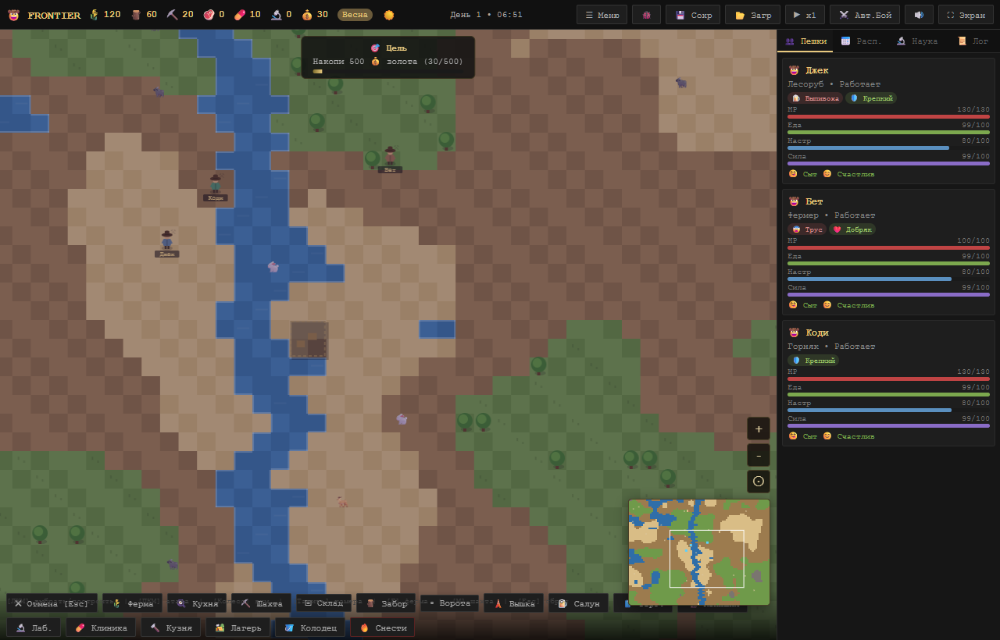

FRONTIER
Играбельная pre-alpha: RimWorld-like colony sim про Дикий Запад. Ковбои работают сами, строят базу, таскают ресурсы, обустраивают комнаты, отбиваются от бандитов и торгуют с караванами.
v1.94Полный аудит проекта; roadmap пересмотрен на 7 фаз. Детерминизм партии из seed готов.
A-BX76 harness-сценария, guard синхронизации и кодировки.
FrontierЛошади, ранчо, салуны, караваны, золото, форты и бандиты вместо sci-fi колонии.
Phase 1Фокус на ПК: Playable Core — время/выживание, огонь, движение по местности.

Живая карта
Поля, вода, песок, склады, ковбои и налёты. Скриншот появится после следующего smoke-прогона.
Что уже сделано
Навыки работыКовбои набирают опыт за труд и растут в уровне (до 10), ускоряя работу. Уровень виден в карточке (⭐).
База симуляцииПешки, роли, приоритеты работ, расписание, настроение, еда, энергия, save/load.
Стройка и логистикаФермы, шахты, склады с фильтрами, перенос ресурсов, заборы, ворота, вышки, торговый пост, конюшня.
RimWorld-стройкаПолы кистью, деревянные и каменные стены, Architect-панель слева, слим-панель действий снизу; чертежи ждут материалы, а строитель несёт пакет перед началом работы.
Ремонт построекСтроители автоматически чинят повреждённые готовые здания, если нет активных blueprint-строек.
ПроизводствоКухня и кузня работают по рецептам, есть лимиты выпуска и понятные причины простоя.
БойАвтобой, типы врагов (головорез/стрелок/снайпер/главарь), волны форта, раненые падают без сознания и спасаются.
СценарииПоселенцы, золотая лихорадка, оборона форта, караванный путь. У каждого своя цель и давление.
КараваныПрофили сделок: припасы, еда, медицина, стройматериалы. Торговый пост показывает цену и результат.
Публичный webGitHub Pages, телефонная ссылка, mobile smoke, защита от битой кодировки и runtime diagnostics.
Мобильный UXНа телефоне есть компактная панель «Пешки / Лог»; она открывается над нижней панелью и не перекрывает миникарту.
Мебель: комфортКровать, стол и декор теперь складываются в общий комфорт усадьбы.
Ранчо и лошадиРанчо работает вместе с конюшней, конюшня приручает диких лошадей, табун усиливает скорость и доход; stats показывает отдельную animal-панель.
UI стройкиСтроительство сгруппировано по смыслу: еда, логистика, оборона, город, ранчо, дом, полы.
КомнатыМебель внутри замкнутой зоны даёт room-бонус; stats и overlay показывают тип комнаты, качество стен, пол, крышу и отдельную room-панель.
Жильё-прогрессияземля → палатка → кровать → кровать в доме (замкнутая комната) = лучший сон. Палатка осталась ранним укрытием.
ЗвукЭмбиент по времени/погоде (ветер, сверчки, дождь, метель) и тихая музыка настроений (спокойно/ночь/бой), кнопка 🔊.
Визуал-пасс 2Ковбои машут инструментом во время работы; помеченные ресурсы пульсируют с иконками 🪓/⛏️/🎯.
Что будет дальше — план по фазам
После аудита план пересмотрен: сначала глубина колонии и идентичность Дикого Запада, мультиплеер перенесён в Phase 5 (не удалён). Детерминизм (seed) уже готов.
Фундамент + стройка — ГОТОВО✅ работы/нужды/расписание · ✅ логистика/производство · ✅ бой/сценарии/караваны · ✅ полы/стены/Architect/подвоз материалов/крыша · ✅ детерминизм (seed).
PHASE 1 — Playable Core (сейчас)⏳ замедление времени + фазы суток · давление выживания · базовый огонь (распространение/тушение) · местность влияет на движение.
PHASE 2 — Colony Management⏳ навыки (per-skill), глубокая личность, реальный вес/переноска, здоровье по частям тела.
PHASE 3 — World Simulation⏳ биомы, реки/озёра/холмы/каньоны/леса, дороги, плавание, точки интереса.
PHASE 4 — Wild West⏳ шериф, бандиты, охотники за головами, прииски, салун-события, железная дорога, фракции.
PHASE 5 — Multiplayer & Online⏳ кооп и облако поверх детерминизма (перенесено сюда из ранних недель).
PHASE 6–7 — Steam EA / Mobile⏳ туториал, локализация, Steam-обёртка; мобайл — последней фазой, без ущерба PC.
Фазы разработки
ГотовоФундамент colony sim + стройка RimWorld-уровня + детерминизм.
Phase 1Playable Core: время/выживание, огонь, движение по местности.
Phase 2Colony Management: навыки, личность, вес, здоровье.
Phase 3–4World Simulation + Wild West: биомы, мир, шериф/бандиты/прииски/ж-д.
Phase 5–7Multiplayer → Steam EA → Mobile (мобайл последним, без ущерба PC).
Документы для разработки
Основной roadmap теперь показан здесь, понятным языком. Технические markdown-файлы оставлены для агентов и подробной проверки.